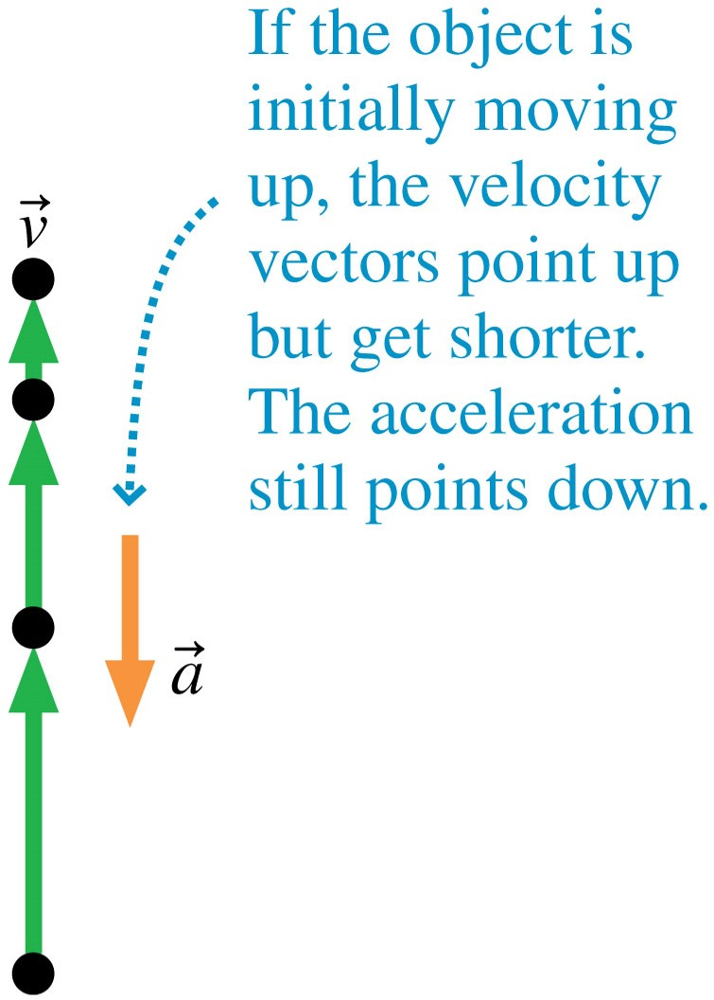
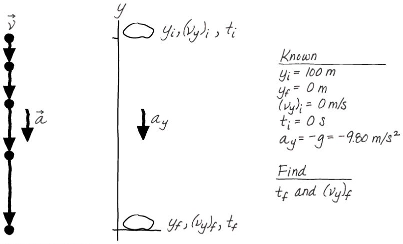

Understand the concept of free fall and free-fall acceleration.
Learn the value we use for free-fall acceleration and the direction this acceleration always takes.
Solve free fall problems using the kinetic equations.
Watch this video
Bowling ball vs. feathers
If no other forces are acting on an object other than the force of gravity, then the object is in free fall, and is experiencing free-fall acceleration also known as acceleration due to gravity. Any objects in free fall, regardless of mass, have the same acceleration.
On the Earth, air resistance is a factor. We look at air resistance in Module 2.6. However, unless stated otherwise, in this unit we will ignore air resistance and assume that falling objects are in free fall.
The symbol g represents the magnitude of the free-fall acceleration. The value of the free-fall acceleration varies slightly at different places on Earth but for calculations in this unit (unless stated otherwise) we will use the following average value:
g = 9.80 m/s2
Earth's gravity always points downward, so the acceleration of an object in free fall is always downward and constant in magnitude, regardless of whether the object is moving up, down, or is at rest, and independent of its speed.
The motion diagram for an object released from rest (dropped) and falling freely. Since the acceleration is the same for all objects, the diagram would be the same for a falling ball or a falling boulder.
The downward acceleration makes it speed up.

The motion diagram for an upward moving object (pretend you've thrown a ball up). The object (green arrows) moves up and its speed decreases as it rises. Note that even though the object is moving up, its acceleration still points down.
The downward acceleration makes it slow down.
IMPORTANT POINT
g is always positive. When dealing with vertical motion, the y-axis is usually chosen to be positive pointing upward, but the acceleration due to gravity always points downward so the direction of the free-fall is down. Therefore, ay = - g.
The negative sign indicates the direction of the acceleration.
WORKED EXAMPLE
A heavy rock is dropped from rest at the top of a cliff and falls 100 m before hitting the ground. How long does the rock take to fall to the ground, and what is its velocity as it hits?
Prepare:

Solve: Free fall is motion with the specific constant acceleration ay = -g. The first question is asking for time so we can use Equation 3 of our kinematic equations (Module 1.4). Using (vy)i = 0 m/s and ti = 0 s, we find:
We can now solve for tf:
Now that we know the fall time, we can use Equation 1 to find the final velocity.
Assess: Are the answers reasonable?
Checking understanding
An arrow is launched vertically upward. It moves straight up to a maximum height, then falls to the ground. The trajectory of the arrow is noted. Which choice below best represents the arrow’s acceleration at the different points?
A = E > B = D; C = 0 E > D > C > B > A A = B = C = D = E A > B > D > E; C = 0
ADD TO YOUR GLOSSARY OF TERMS: Try to define and summarise terms and concepts as they are introduced. Add to it with each module you do. Include: free fall, and acceleration due to gravity.
ADD TO YOUR SUMMARY OF KEY EQUATIONS: Try to summarise key equations and make sure you know how to use the equations in numerical calculations. Add to the list with each module you do. This summary will be useful in the online quizzes and in the examination.
TRY THE FOLLOWING (attempt questions before looking at the answers):